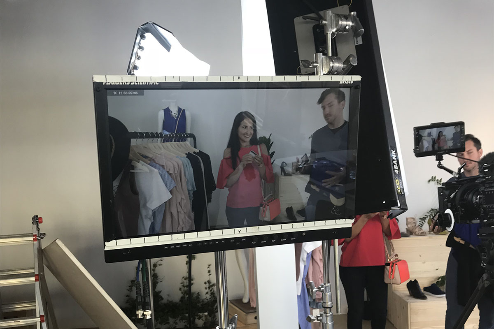
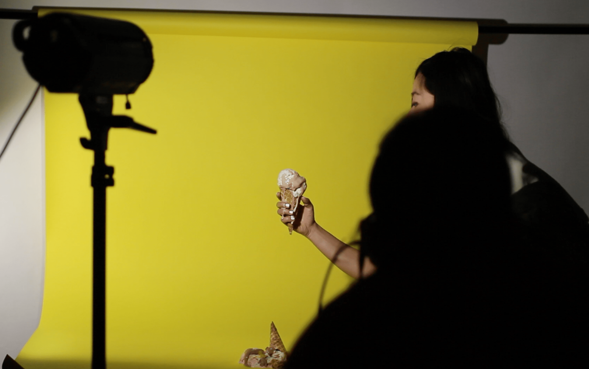

Karen&Butterbar is a graphic design commission that turned into a full-on art direction project.
Butterbar is a viral video marketing agency founded by Karen X Cheng , who’s created countless viral marketing videos for big brands such as Beats By Dre, Google, Facebook, SoFi, and the list goes on. I was referred to the recruiting post on Karen’s public profile by my cousin, Fanny Luor who’s currently working as an Illustrator at Dropbox.
Background
I worked with Karen X on a logotype design comission over a weekend, a video art direction project over the course of 2 weeks, a rebrand photoshoot over a single night, and finally a website redesign over the course of a week.
My Journey
1 - Logotype Design and Photo Manipulation
When I first work with Butterbar, the agency is still named Karen X. Because of the growing number of their clients and need for expansion, they decided to rebrand into the current Butterbar and needed some help to design the new logo.
Some initial sketches I did for the logo ideationInspired by the Klarna's website art direction. We wanted the logotype to emit a sense of softness and "spreadibility" (like that of a butter) while keeping a feeling of professionalism.
I was also given an unedited image of a pairs of lips to go with the logotype.
After a few different iterations based on the different level of “freedom” I am going for, this is the final deliverable.
With minor differences in the logo iterations, I want to lay them out side by side for comparison in the most basic form: black and white. I experimented with different drip styles, as well as the distances between the teeth and the lips2 - Art Direction for SoFi's "6 Types of Credit Card Shoppers"
After working together with Butterbar, I was further extended an opportunity to be an assistant art director for one of their viral marketing videos— "SoFi’s Six Type of Credit Card Shoppers". Without having any in person meetings, I was given a week and a half to ideate, conceptualize, actualize, purchase, and source the props needed for the shoot with the help of a production assistant.
Every scene needed to feel relatable, memorable and most importantly, not like an ad . I started talking to friends, coworkers, people who I met for the first time about different types of credit card shoppers as a test to see if any one of them resonate with any of the persona or know someone who fits into a category. I asked about what they're like, what characteristics define them, and identify commonality to use as a basis for my moodboards. After the moodboards are reviewed and revised, I spent a few days working with the PA to gather all the resources with an organized prop list.
On the day of the shoot, we spent 1 full day at the Laundre in SF Mission District to execute our vision while working with our client SoFi. I prepared at least 3-4 versions of the same type of prop to make sure we had enough options for the director to work with. Here is the final product.
3 - Photoshoot & Website
Our relationship continued, with the changing landscape of the competitive market and the need to diverge from similar competitors, I again partnered up with Butterbar on revamping their website and coordinated a one-night photoshoot at my Berkeley studio.
I collaborated with Butterbar art director Emily Yau and had a few calls regarding moodboarding, shot list, prop sourcing and overall concept. Since we were limited to using Squarespace as a platform and the client wanted to see if we can incorporate cinemagraphs in the website, The day prior the shoot, I wanted to make sure the day of the shoot goes as smoothly as possible, so I tested out a few shots and experimented with creating cinemagraphs a few days prior to the shoot.
The initial tests were quite choppy, but they provided a good reference for what could be improved. (for instance, the stabilization of the video parts)
As you can see, the right eye is jerking up and down a little.
We ended up not using a lot of the cinemagraphs on the website because of broswer compatibility and Squarespace limitations, but they still were part of the final deliverables.
On the day of the shoot we had a lot of fun smashing donuts, crushing ice cream, making butter dominos, and pouring honey onto my laptop (yup). Here are some behind-the-scenes.
Finally I went through my process of photo selections with the client, editing, reviews, and final edits to get to the final product, which then I used to help revamp the Butterbar official website with additional CSS enhancement. Here is the final result. You can also check it out live at Butterbar.com


Interested?
If you are interested in art direction work, shoot me a message!